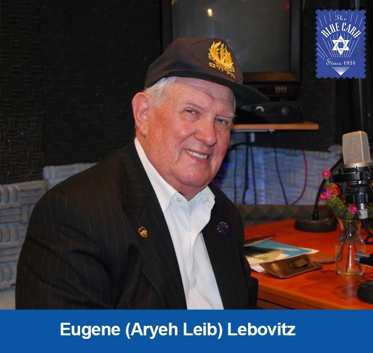
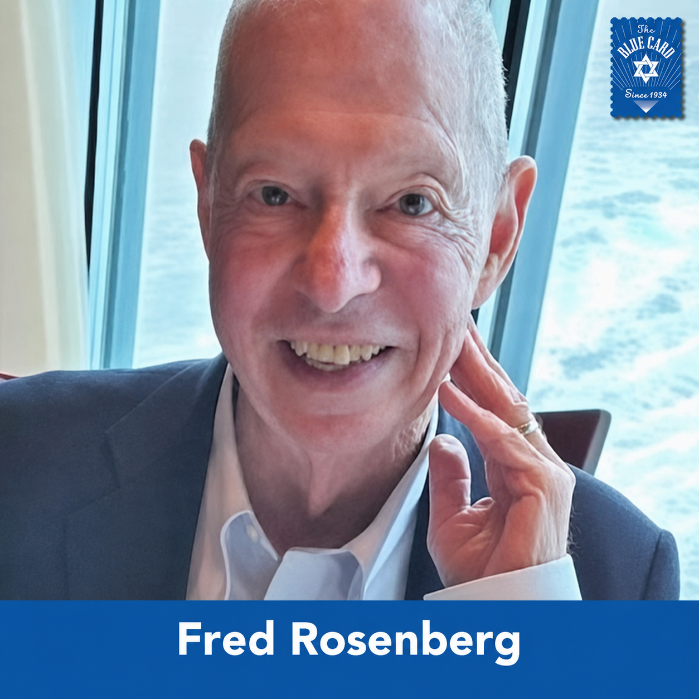
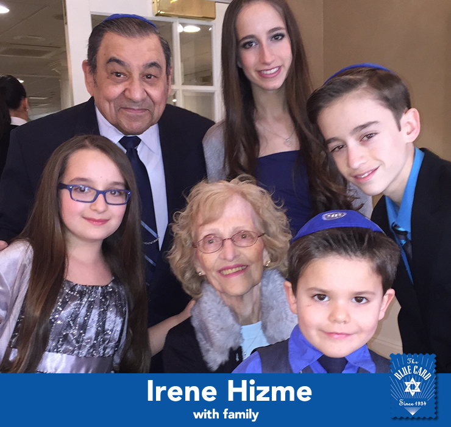
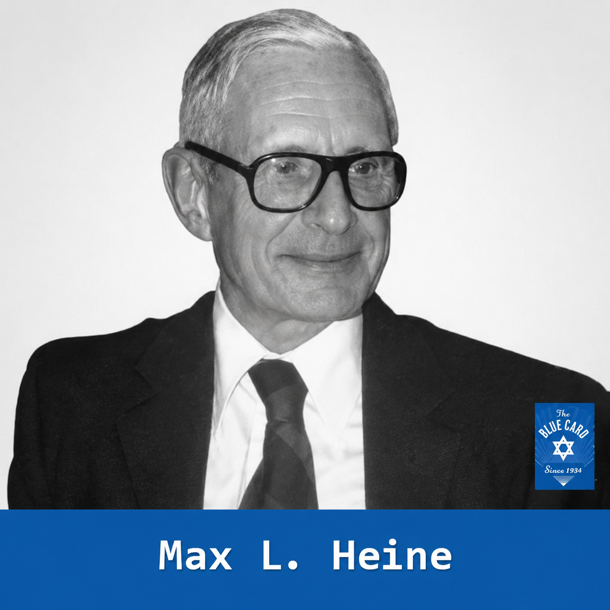
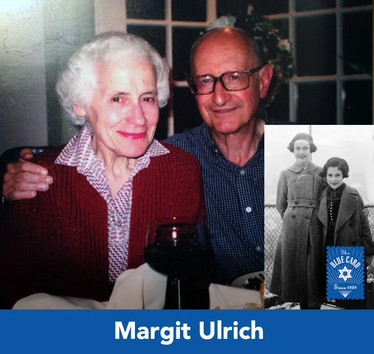

Special Tribute
The Blue Card would like to extend our sincerest gratitude for the following people, who were dedicated supporters and members of The Blue Card team. Whether donors, members of our Speaker’s Bureau, or volunteers, these individuals gave crucial time and effort during their lives to assisting Holocaust survivors in need, something our organization cannot do alone. We honor and recognize these efforts and hope they inspire future generations to do the same. May each of their memories be a blessing.
Dr. Edith Eva Eger
Sept. 29, 1927 - April 27, 2026

Eugene Joseph Lutzkendorf
Sep. 4, 1928 - Jan. 6, 2022
Sol Urbach
Oct. 29, 1925 - Dec. 14, 2021
David Mermelstein
Dec. 27, 1928 - Jul. 6, 2021
George Wolf
Nov. 16, 1927 - Jun. 28, 2020

Fred Rosenberg
Mar. 19, 1932 - Oct. 19, 2020
Sir James D. Wolfensohn
Dec. 1, 1933 - Nov. 25, 2020
Edda Servi Machlin
Feb. 22, 1926 - Aug. 16, 2019

Irene Hime
Dec. 21, 1937 - May 29, 2019
Frank Harris
Dec. 7, 1922 - Feb. 22, 2017
Elie Wiesel
Sep. 30, 1928 - Jul. 2, 2016

Max L. Heine
1911 - 1988
Mark Warren Bobyatsky, M.D.
Jun. 29, 1959 - Aug. 25, 2014

Margo Urich
Apr. 4, 1938 - Jun. 23, 2014
Leo Rechter
1927 - Feb. 22, 2021
Erika Teutsch
Sep. 8, 1923 - Dec. 23, 2020
Gerda Weissmann
Mar. 10, 1924 - Apr. 30, 2020
For Memoriam inquiries, please call 212-239-2251 or email info@bluecardfund.org.